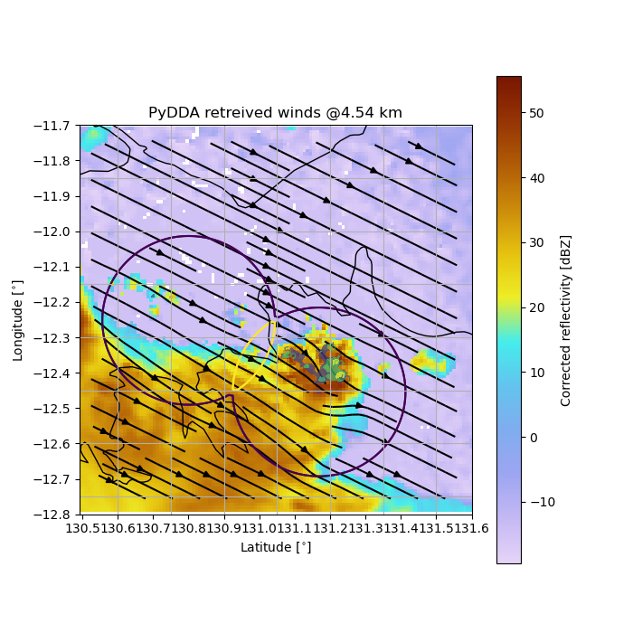
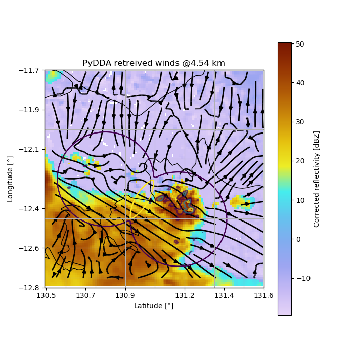
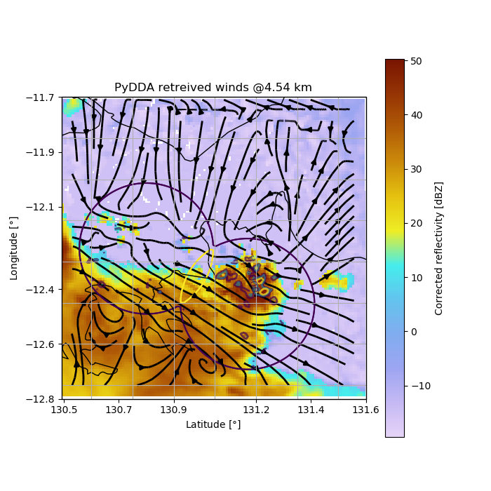

Note
Click here to download the full example code
Example on geographic plotting and constraint variation¶
In this example we show how to plot wind fields on a map and change the default constraint coefficients using PyDDA.
This shows how important it is to have the proper intitial state and constraints when you derive your wind fields. In the first figure, the sounding was used as the initial state, but for the latter two examples we use a zero initial state which provides for more questionable winds at the edges of the Dual Doppler Lobes.
- 
- 
- 
Out:
Calculating weights for radars 0 and 1
Calculating weights for models...
Starting solver
rmsVR = 45.92438215135045
Total points:92092.0
| Jvel | Jmass | Jsmooth | Jbg | Jvort | Jmodel | Max w
| 10.2655| 15.1394| 0.0000| 0.0000| 0.0000| 0.0000| 20.0980
Norm of gradient: 0.0038855908979725058
Iterations before filter: 10
| Jvel | Jmass | Jsmooth | Jbg | Jvort | Jmodel | Max w
| 2.7156| 4.3442| 0.0000| 0.0000| 0.0000| 0.0000| 20.4927
Norm of gradient: 0.0009764062600858966
Iterations before filter: 20
| Jvel | Jmass | Jsmooth | Jbg | Jvort | Jmodel | Max w
| 2.7156| 4.3442| 0.0000| 0.0000| 0.0000| 0.0000| 20.4927
Norm of gradient: 0.0009764062600858966
Iterations before filter: 30
Applying low pass filter to wind field...
Iterations after filter: 1
Iterations after filter: 2
Done! Time = 47.5
Calculating weights for radars 0 and 1
Calculating weights for models...
Starting solver
rmsVR = 45.92438215135045
Total points:92092.0
| Jvel | Jmass | Jsmooth | Jbg | Jvort | Jmodel | Max w
| 7.9780| 41.2817| 0.0000| 0.0000| 0.0000| 0.0000| 17.4625
Norm of gradient: 0.007461572513071653
Iterations before filter: 10
| Jvel | Jmass | Jsmooth | Jbg | Jvort | Jmodel | Max w
| 1.9889| 12.6084| 0.0000| 0.0000| 0.0000| 0.0000| 26.7333
Norm of gradient: 0.0018231999841989228
Iterations before filter: 20
| Jvel | Jmass | Jsmooth | Jbg | Jvort | Jmodel | Max w
| 1.0138| 7.0861| 0.0000| 0.0000| 0.0000| 0.0000| 30.2866
Norm of gradient: 0.004237366809977051
Iterations before filter: 30
| Jvel | Jmass | Jsmooth | Jbg | Jvort | Jmodel | Max w
| 0.8031| 4.8628| 0.0000| 0.0000| 0.0000| 0.0000| 31.5739
Norm of gradient: 0.0020077365277524706
Iterations before filter: 40
| Jvel | Jmass | Jsmooth | Jbg | Jvort | Jmodel | Max w
| 0.4837| 4.0882| 0.0000| 0.0000| 0.0000| 0.0000| 31.7890
Norm of gradient: 0.0010567027912446736
Iterations before filter: 50
| Jvel | Jmass | Jsmooth | Jbg | Jvort | Jmodel | Max w
| 0.3945| 3.6417| 0.0000| 0.0000| 0.0000| 0.0000| 31.8143
Norm of gradient: 0.0005747818080724062
Iterations before filter: 60
| Jvel | Jmass | Jsmooth | Jbg | Jvort | Jmodel | Max w
| 0.3945| 3.6417| 0.0000| 0.0000| 0.0000| 0.0000| 31.8143
Norm of gradient: 0.0005747818080724062
Iterations before filter: 70
Applying low pass filter to wind field...
Iterations after filter: 1
Iterations after filter: 2
Done! Time = 108.7
import pydda
import pyart
import cartopy.crs as ccrs
import matplotlib.pyplot as plt
berr_grid = pyart.io.read_grid(pydda.tests.EXAMPLE_RADAR0)
cpol_grid = pyart.io.read_grid(pydda.tests.EXAMPLE_RADAR1)
# Load our radar data
sounding = pyart.io.read_arm_sonde(
pydda.tests.SOUNDING_PATH)
u_init, v_init, w_init = pydda.initialization.make_constant_wind_field(
berr_grid, (0.0, 0.0, 0.0))
# Let's make a plot on a map
fig = plt.figure(figsize=(7, 7))
ax = plt.axes(projection=ccrs.PlateCarree())
pydda.vis.plot_horiz_xsection_streamlines_map(
[cpol_grid, berr_grid], ax=ax, bg_grid_no=-1, level=7, w_vel_contours=[3, 5, 8])
plt.show()
# Let's see what happens when we use a zero initialization
new_grids = pydda.retrieval.get_dd_wind_field([cpol_grid, berr_grid],
u_init, v_init, w_init,
Co=1.0, Cm=1500.0, frz=5000.0,
mask_outside_opt=True)
fig = plt.figure(figsize=(7, 7))
ax = plt.axes(projection=ccrs.PlateCarree())
pydda.vis.plot_horiz_xsection_streamlines_map(
new_grids, ax=ax, bg_grid_no=-1, level=7, w_vel_contours=[3, 5, 8])
plt.show()
# Or, let's make the radar data more important!
new_grids = pydda.retrieval.get_dd_wind_field([cpol_grid, berr_grid],
u_init, v_init, w_init,
Co=10.0, Cm=1500.0, frz=5000.0,
mask_outside_opt=True)
fig = plt.figure(figsize=(7, 7))
ax = plt.axes(projection=ccrs.PlateCarree())
pydda.vis.plot_horiz_xsection_streamlines_map(
new_grids, ax=ax, bg_grid_no=-1, level=7, w_vel_contours=[3, 5, 8])
plt.show()
Total running time of the script: ( 2 minutes 41.748 seconds)